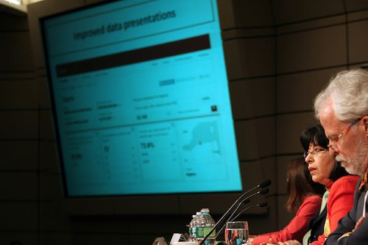
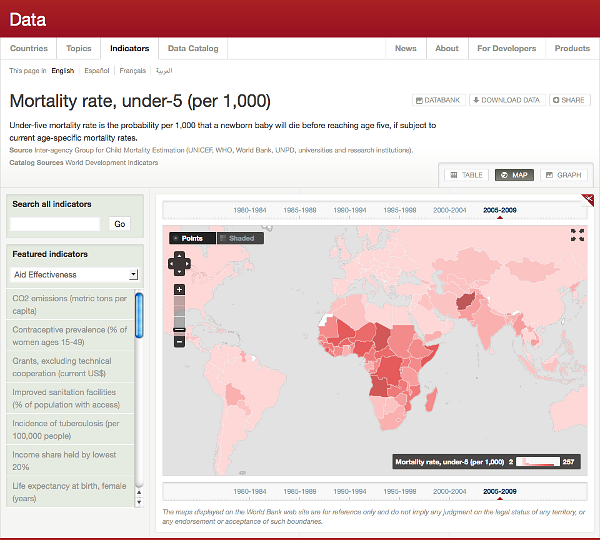
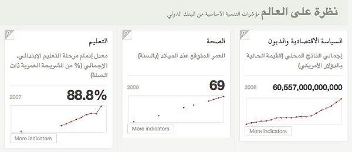
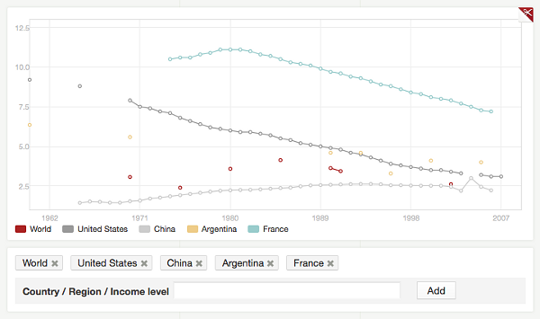

Opening Over 2,000 Development Datasets
 Photo courtesy of World Bank Photo Collection. Eric Swanson and Shaida Badiee present on data.worldbank.org.
Opening Over 2,000 World Development Indicators to the Public for Free
Strategy, design, and development for data.worldbank.org
Signaling the most aggressive open data push in the international development community to date, World Bank President Robert Zoellick launched data.worldbank.org in April 2010. The site is really just a display layer on top of the World Bank’s API, serving as the browser for the most commonly used data, and is built to let researchers and policy makers filter though the vast data sets and quickly jump to indicators. We designed, built, and launched the entire site in just over a month.

For much of this data, this is the first time that it is available in languages other than English. The site is currently in Arabic, Spanish, French, and English.

All the data is highly interactive. For example, you can graph countries against each other.

Building for performance
The data browser was built using all open source tools. In order to get the level of performance we needed for the site, we worked to modify the API’s internals. The process of building the site directly against the API provided valuable feedback of what needed to be changed in the public API to make it a valuable and reliable tool for a broad group of potential users.